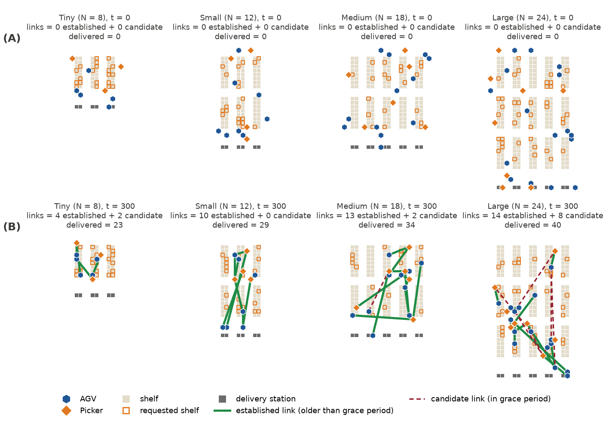
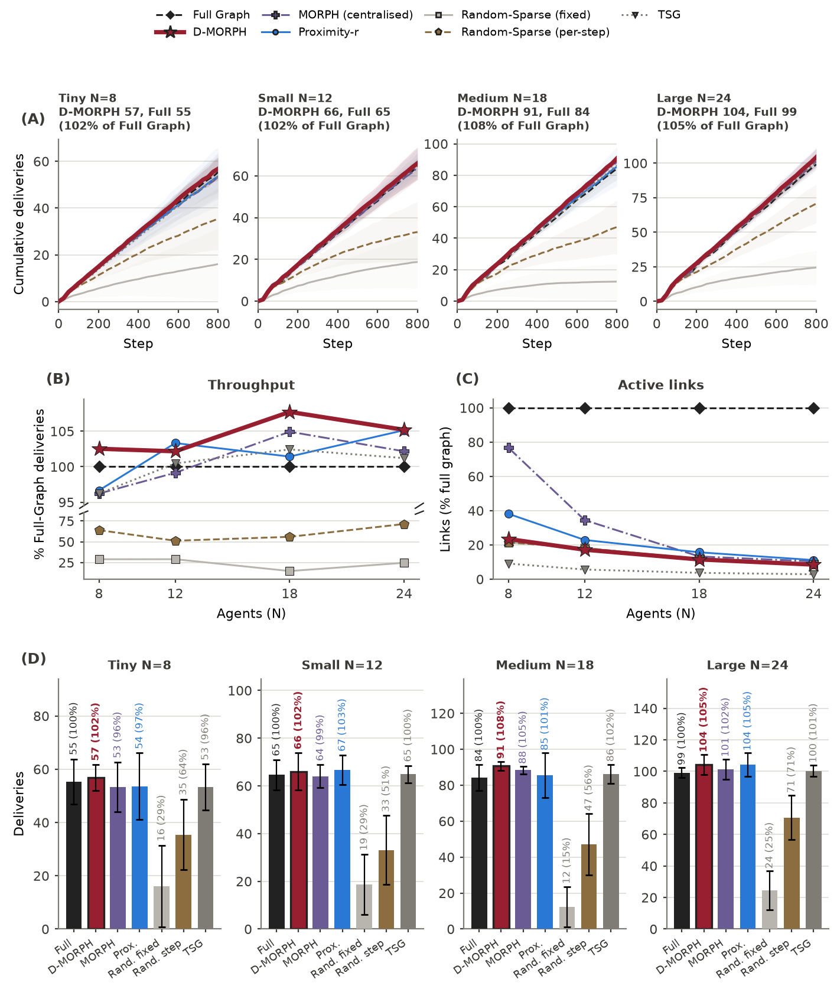
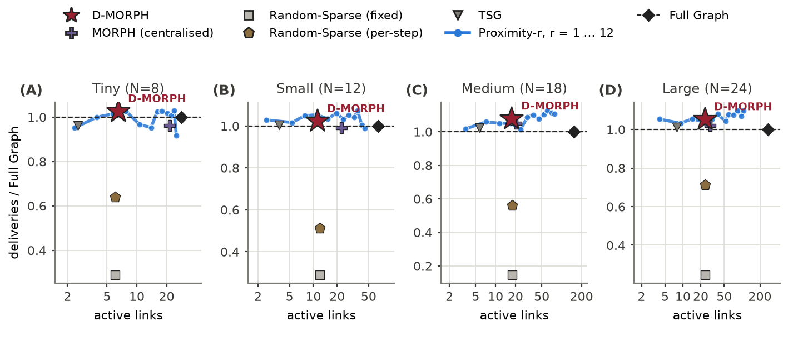
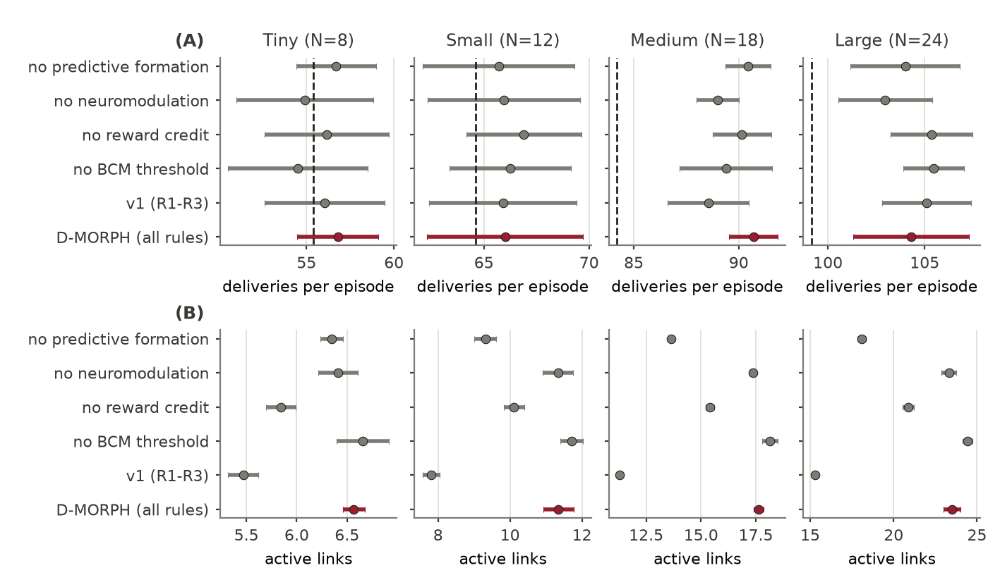
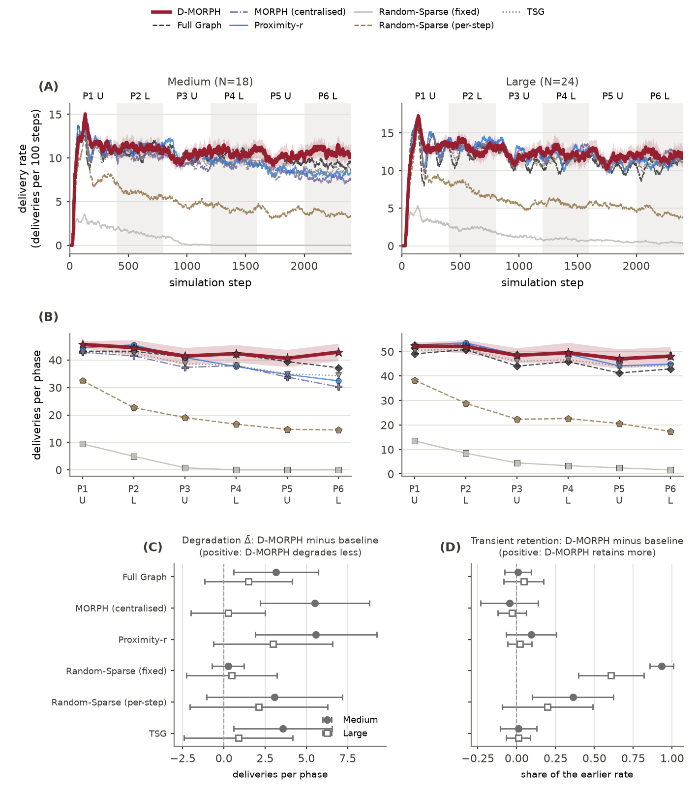
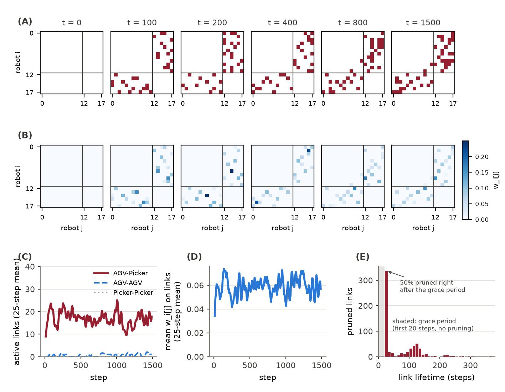

D-MORPH: Decentralised Self-Organising Multi-Robot Task Allocation via Neuroplasticity-Inspired Adaptive Topology
- Xuezhi Niu
- Didem Gürdür Broo
D-MORPH in the TA-RWARE warehouse (12 AGVs, 6 Pickers). Green: established links; red dashed: candidate links.
Abstract
Heterogeneous multi-robot teams must decide, continually and while working, which robots should collaborate on each task. Existing approaches either fix partners by a hand-designed rule such as proximity, negotiate them through bids over a task cost model, or learn communication end-to-end with offline multi-agent reinforcement learning. We present D-MORPH, a training-free and fully decentralised coordination mechanism inspired by neuroplasticity. Each robot keeps its own directed partner preferences and links and rewires them online with four plasticity rules (synaptic, homeostatic, structural and metaplastic), using only what it observes itself: its target, the robots co-assigned with it, the requests it sends and receives, and the completion of its joint tasks. D-MORPH needs no central coordinator, no shared state, no message exchange and no offline training. On the TA-RWARE robotic warehouse with 8 to 24 robots, D-MORPH reached 102–108% of the throughput of a fully connected team while linking only 9–23% of robot pairs, and lost the fewest deliveries between repeated demand phases under a package location shift.
Figure 1: Allocation and learning at each step. The benchmark takes the oldest pending task (1) and its nearest available robot i (2), and executes accepted tasks (5). Robot i requests the complementary robot j it prefers (3), which accepts according to its own preference, with probability 0.25 + 0.75 wj[i] (4). Each robot then applies R1–R4 to its own preferences and links (6).
Method
Every robot owns one row of the coordination graph and changes only that row; nothing in its update reads another robot's state.
| Rule | Biological basis | What each robot does with its own preferences and links |
|---|---|---|
| R1 synaptic | Hebbian, reward-modulated plasticity | Decays preferences and strengthens them in proportion to the share of recent targets shared with a partner; adds credit when a jointly served task is completed. |
| R2 homeostatic | Synaptic scaling | Adjusts its readiness to form links so its number of links stays near a target. |
| R3 structural | Synaptogenesis and pruning | Prunes weak links after a 20-step grace period; forms a link to its best candidate (recent co-assignment and the robot it was proposed). |
| R4 metaplastic | BCM threshold, neuromodulation | Over-potentiated links decay faster; explores when its own performance drops, consolidates when it is high. |

Figure 2: TA-RWARE with D-MORPH's links at four fleet sizes: (A) initial state, before any task is allocated; (B) step 300. Green: established links; red dashed: candidate links.
Supplementary Videos
One episode (800 steps, seed 42) at each fleet size. Blue hexagons: AGVs; orange diamonds: Pickers; orange outlines: requested shelves; grey squares at the bottom: delivery stations. The strip below each video shows cumulative deliveries and active links.
Video 1: Tiny, 5 AGVs + 3 Pickers
Video 2: Small, 8 AGVs + 4 Pickers
Video 3: Medium, 12 AGVs + 6 Pickers
Video 4: Large, 16 AGVs + 8 Pickers
Results
Here are the full figures for the main paper; all numbers are in results.md. Please refer to the paper for the detailed analysis.
Scale study
Seven methods, four fleet sizes, 20 seeds, 800 steps. Mean deliveries per episode; D-MORPH delivered significantly more than Full Graph and MORPH at Medium after Bonferroni correction.
| Fleet | D-MORPH | Full Graph | MORPH | Proximity-r | TSG | Random-Sparse fixed / per-step | D-MORPH links (% of pairs) |
|---|---|---|---|---|---|---|---|
| Tiny (8) | 56.8 | 55.4 | 53.3 | 53.5 | 53.3 | 16.1 / 35.5 | 6.6 (23%) |
| Small (12) | 66.0 | 64.6 | 64.0 | 66.8 | 64.9 | 18.8 / 33.1 | 11.4 (17%) |
| Medium (18) | 90.7 | 84.2 | 88.3 | 85.4 | 86.2 | 12.4 / 47.1 | 17.6 (12%) |
| Large (24) | 104.3 | 99.2 | 101.3 | 104.2 | 100.3 | 24.4 / 70.8 | 23.5 (9%) |

Figure 3: (A) Cumulative deliveries (mean ± SD). (B) Deliveries as a percentage of Full Graph; the y-axis is broken between the Random-Sparse variants and the other methods. (C) Active links as a percentage of the possible pairs. (D) Final deliveries (mean ± SD).

Figure 4: Deliveries relative to Full Graph against the number of active links (logarithmic x-axis). The blue curve is Proximity-r for r = 1 to 12; markers show the other methods.
Ablations

Figure 5: D-MORPH with mechanisms removed (mean and 95% confidence interval). Every variant delivered within 4% of the full model and no difference was significant; the mechanisms shape the number of links: without metaplasticity, the predictive hint or the reward credit D-MORPH held fewer links.
Package location shift
New requests come only from the upper (U) or the lower (L) half of the shelves, alternating every 400 steps over six phases (2400 steps), at Medium and Large. The delivery stations are on the lower edge.

Figure 6: (A) Delivery rate (100-step moving average). (B) Deliveries per phase. (C) Degradation between repeated phases and (D) transient retention after a shift: D-MORPH minus each baseline, paired by seed (mean and 95% confidence interval; positive favours D-MORPH; circles: Medium, squares: Large).
Emergent allocation structure

Figure 7: One 1500-step Medium episode. (A) Links and (B) preferences held by each robot (row i) at five snapshots; AGVs are robots 0–11. (C) Links by pair type. (D) Mean preference on links. (E) Lifetimes of pruned links: half end just after the grace period, about a third last more than 100 steps.